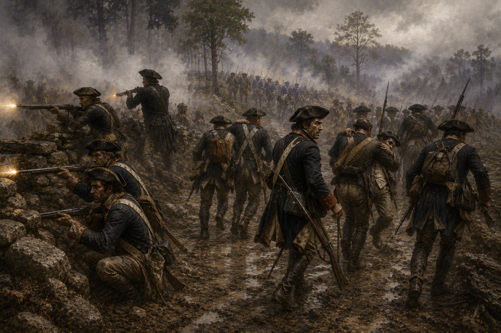
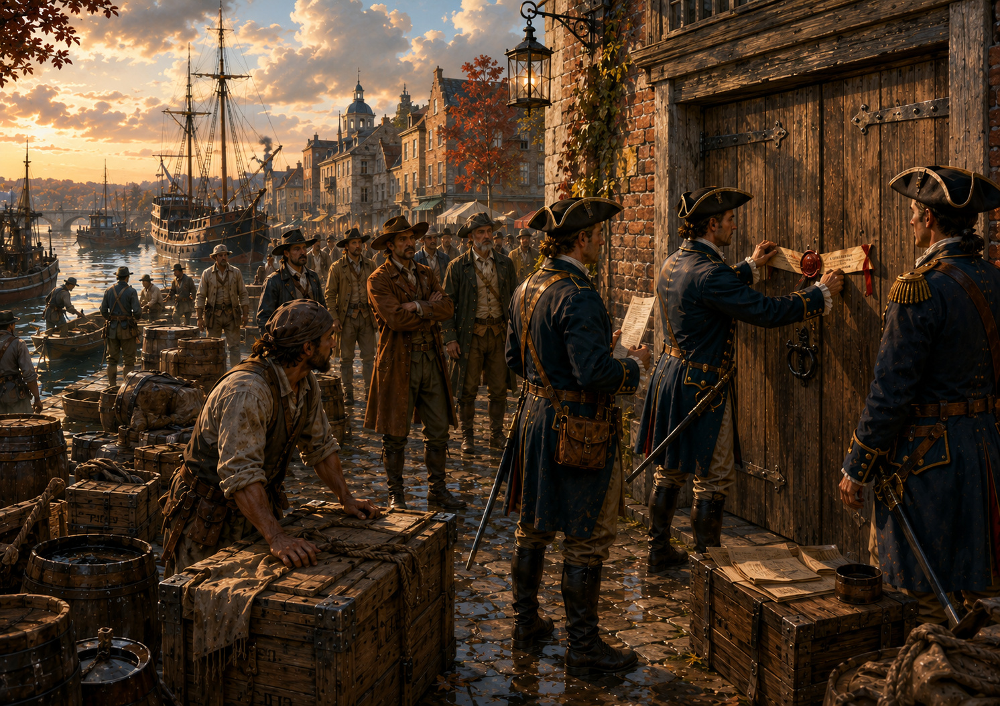
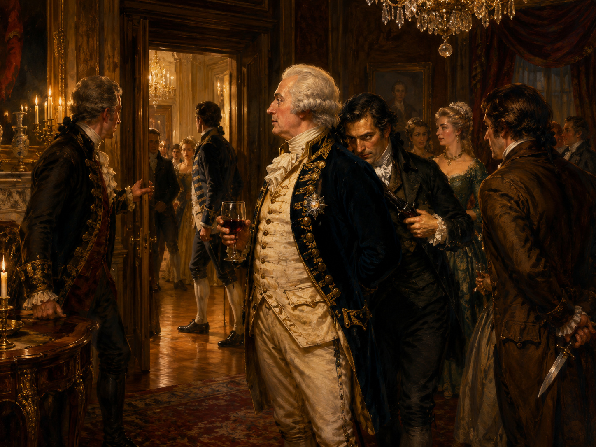
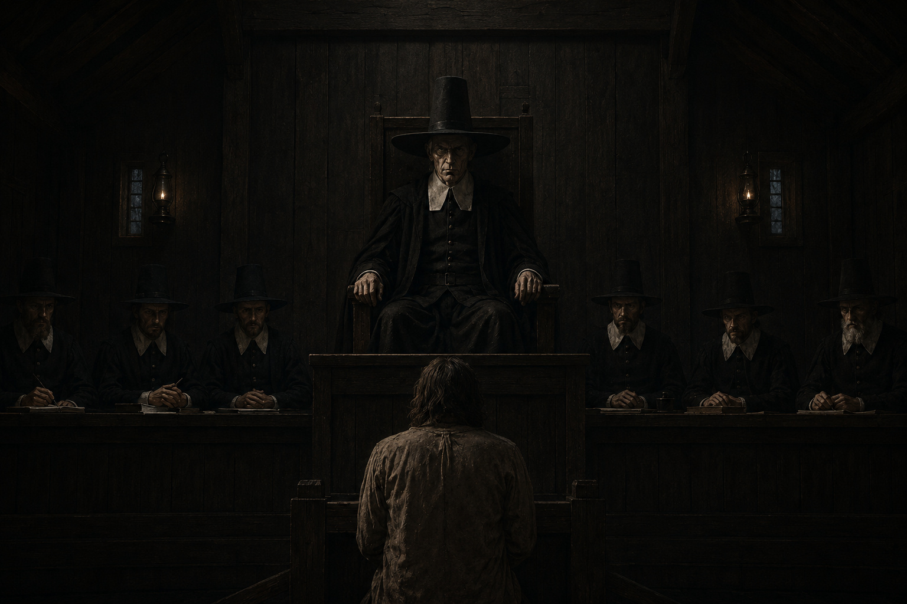

Border system
Neutral uses ivory. Military, Diplomats, Financiers, Intelligence, Mystics, and Inquisition use the same faction colors already established on the public faction pages.
Playable card system · faction identity study
Seven canonical v0.6.1 cards test the approved parchment textures and outer-border identities together. Neutral retains its ivory border; each faction uses its established faction color.
Comparison basis
Neutral uses ivory. Military, Diplomats, Financiers, Intelligence, Mystics, and Inquisition use the same faction colors already established on the public faction pages.
Final card art is used where it exists. Military, Mystics, and Inquisition use approved reference scenes provisionally.
The set includes sparse, ordinary, multi-section, and reminder-text cards. Exceptional cards that cannot remain legible in this frame require a separate layout study rather than smaller type.
Print and compare
Artwork status is shown only in the screen labels above each specimen. The card faces themselves remain clean production-style studies.
NeutralFinal card art · Ivory border
Draw one card.
Add +1 to your battle total.
MilitaryReference art · Crimson border

Bank Unbroken Ranks as an Asset. After you win a battle in which you used no Orders, you may discard it. If you do, gain 1 Command.
If you win this battle and used no Orders during it, gain 1 Command.
DiplomatsFinal card art · Royal-blue border

After an opponent refuses your Terms, you may bank Sanctions: Embargo from your Hand without spending an Action. Identify that opponent.
While banked, that opponent's Asset limit is reduced by 1, to a minimum of 0.
After that opponent accepts your Terms, put Sanctions: Embargo in its owner's Discard Pile.
FinanciersFinal card art · Emerald border
Choose one Territory you neither control nor occupy. Place Speculation face up beside it. At the start of your next turn, if you occupy or control that Territory, gain 2 Capital and put Speculation in your Discard Pile. Otherwise, put it in your Graveyard.
If you initiated this battle, you may spend 1 Capital. If you do and win, gain 2 Capital during the Aftermath of the battle. If the battle ends without you winning, put Speculation in your Graveyard instead of its normal destination.
IntelligenceFinal card art · Charcoal border

Reveal the opponent's Hand. Choose one card there and discard it.
When Assassins is revealed, negate one opposing Gambit. If Assassins is revealed with Gambits, resolve this before other Gambit effects. If the opponent set no Gambit, give them disadvantage during this battle.
Complete after you reveal one or more cards in the opponent's Hand outside a battle, then win a battle against that opponent in which they set a Gambit.
MysticsReference art · Deep-violet border
Bank Witchcraft as an Asset. Once per turn, after Tactics are revealed in a battle involving you, you may put one card from your Hand in your Graveyard. If you do, choose one other active card you control in the battle with an eligible Battle effect. Resolve that effect one additional time.
After Tactics are revealed, choose one other active card you control in the battle with an eligible Battle effect. Resolve that effect one additional time. If you cannot choose one, gain advantage. During the Aftermath of the battle, put Witchcraft in your Graveyard instead of its normal destination.
InquisitionReference art · Antique-gold border

Reveal the opponent's Hand. Choose one eligible Gambit there. Until the end of the turn, if they set a Gambit in a battle involving you, they must set that card if able.
After Tactics are chosen, before they are normally revealed, reveal Confession if it is face down. Reveal one opposing face-down Tactic. You may return Confession to your Reserve and choose another eligible Tactic from your Reserve face down.
Physical review